СТОП
Здесь мы рассказываем об алкогольных напитках — вход строго с 18 лет.
Если вы совершеннолетний, нажмите «Да», чтобы продолжить
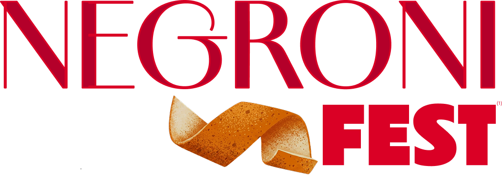
Создай фестивальное меню Негрони, чтобы познакомить новых гостей с этой культурой, заявить о своем заведении на всю страну и получить возможность провести гостевую смену в одном из пяти посольств Негрони.
Коктейль Негрони — многогранный шедевр простоты и изысканности, который стал символом итальянской культуры.
Созданный в 1919 году в кафе Касони по запросу графа Камилло Негрони, был создан классический рецепт: Кампари, сладкий вермут и джин. Негрони не только отражает неподвластное времени очарование, но и демонстрирует удивительную адаптивность и многоликость: его вариации подчеркивают международное влияние коктейля.
Сегодня классический Негрони продолжает оставаться одним из самых популярных коктейлей в мире, а его традиционная формула активно используется и переосмысливается миксологами по всему миру. По данным ежегодного отчета журнала Дринкс Интернешнл (англ. Drinks International), Негрони занимает первое место в рейтинге самых продаваемых классических коктейлей среди ведущих баров мира.
РЕГИСТРАЦИЯ ▸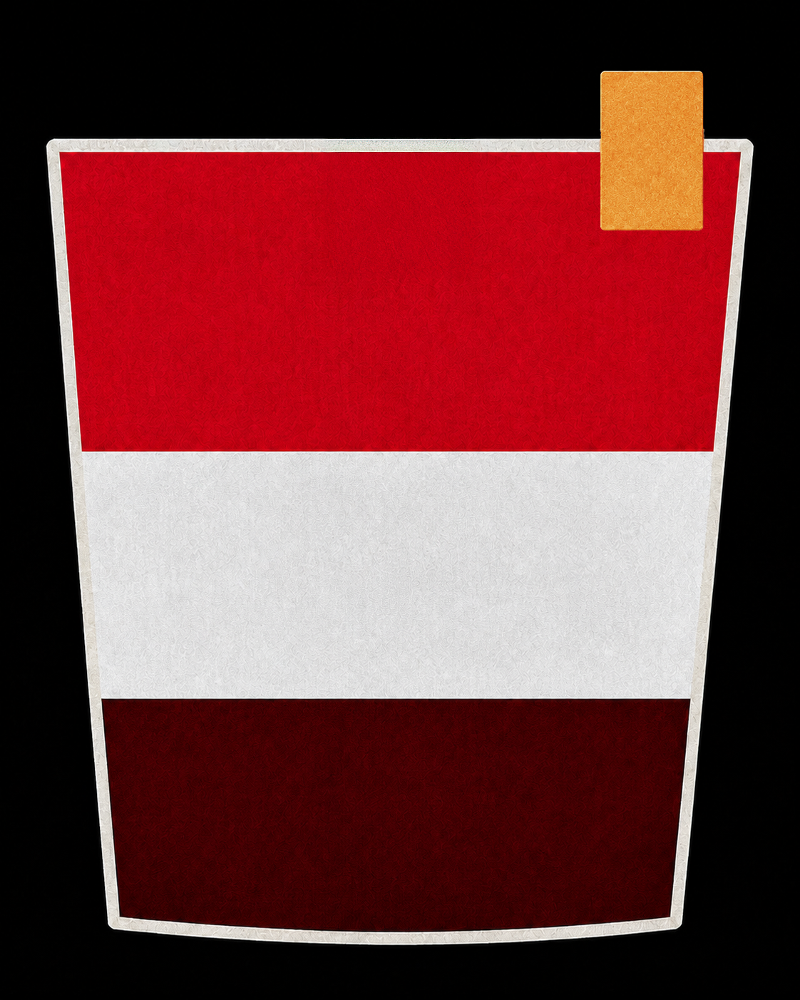
Кампари Джин Сладкий вермутТеперь настало твое время создать свой уникальный твист и получить лимитированный набор участника. Заведения, которые отправили полный рецепт и описание коктейлей, расскажут о своей идеи в посольстве Негрони
Раскрой свой твист на коктейль
негрони, через: обоняние,
осязание, зрение, слух, вкус
Создай коктейль Заполни форму в чат-боте Загрузи фото коктейля
Жди приглашения на гест
Подготовь r-keeper Распечатай меню Загрузи в бот фото «живого меню», как оно выглядит в баре
Предлагай гостям напитки из фестивального меню
Получи набор участника
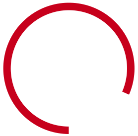
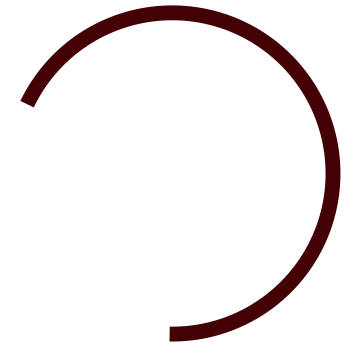
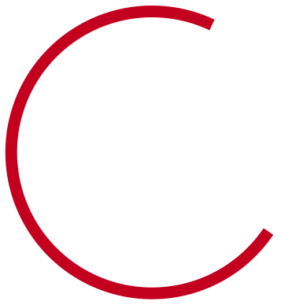
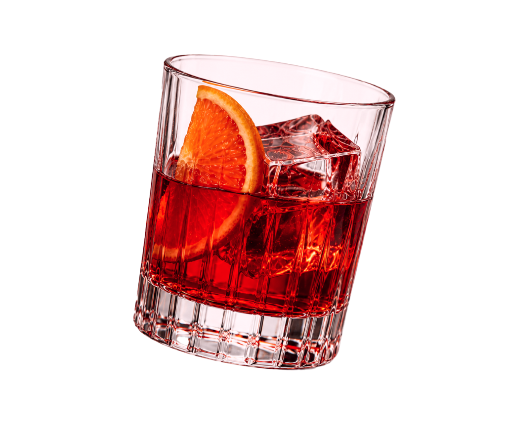
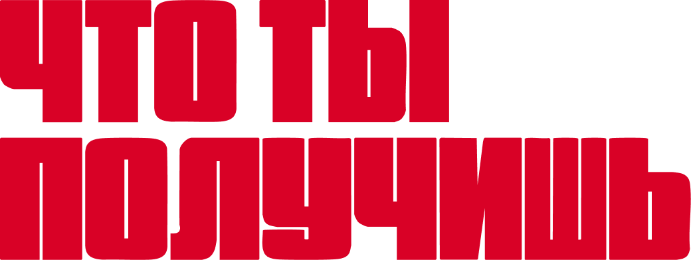
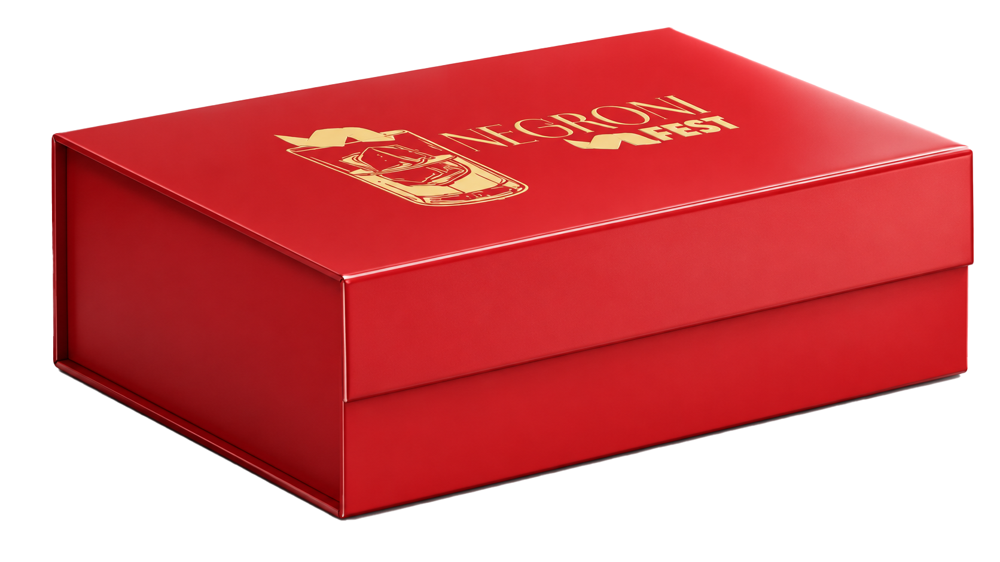
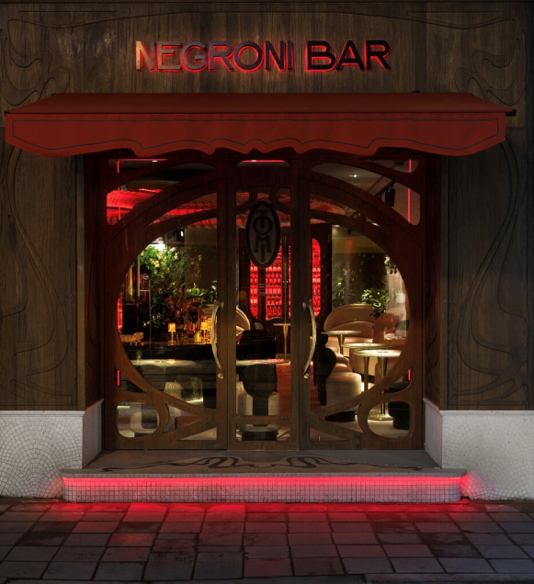
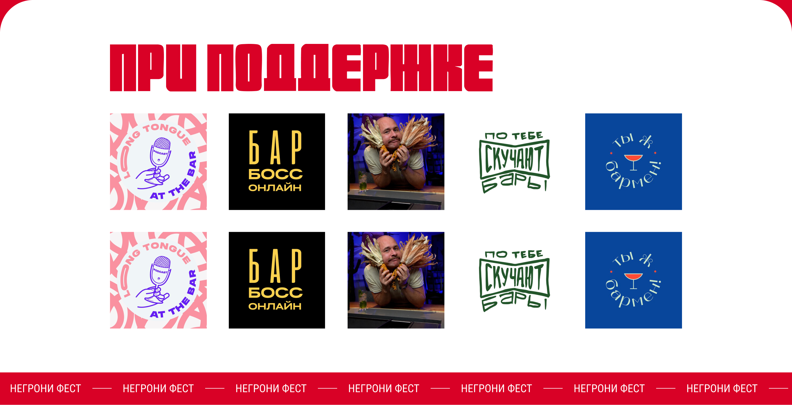